Suggestion #9472
Workspace module redesign
| Status: | Resolved | Start date: | 2010-08-26 | |
|---|---|---|---|---|
| Priority: | Must have | Due date: | ||
| Assigned To: | Lars Zimmermann | % Done: | 0% |
|
| Category: | Design | |||
| Target version: | TYPO3 4.5 LTS | |||
| Tags: |
Description
Dear all
we are going to redesign the existing workspace module in TYPO3, because refactoring with templating and so on would last longer. We discussed the module in the workspace team and created screens how it should look in TYPO3 4.5.
Before we begin to code we would highly appreciate your knowledge for the following questions:
- What do you think about the usability of the new module?
- What do you suggest as icon for "Jump to the page module and go to the page of this conent element" as described in the screen? The current icon is, I think, the old one for this
- How would you solve the OK button for the stage change select box?
- How would you design the pager? I suggest to use the TYPO3 pager from the list module
Unfortunately the explanations in the screens are German, if you need it in English we will be able to create an updated screen.
I know you have a lot to do but please note that we need your feedback by the next two weeks because we still need time to code befor feature freeze.
And please also note that it is not the target to create a completly new module which is perfect but completely different, we want to make the extisting module easier to use for the normale be_user.
Thank you so much for your help.
Kind regards,
Sonja
Workspace team leader
{kind=link}
{kind=link}
{kind=link}
{kind=link}
{kind=link}
{kind=link}
{kind=link}
{kind=link}
{kind=link}
{kind=link}
{kind=link}
{kind=link}
{kind=link}
{kind=link}
{kind=link}
{kind=link}
{kind=link}
Related issues
History
#1 Updated by Jens Hoffmann almost 5 years ago
Team please give feedback to those screens here:
see updated screens below
#2 Updated by Sonja Schubert almost 5 years ago
- File 20100907_workspace_editor added
- File 20100907_workspace_editorInLive added
- File 20100907_workspace_stagebox added
Dear all
after discussion and lots of feedback with and from our workspace team I've created new screens.
We would appreciate your feedback to the following points:
- What do you think about the usability of the new module?
- Do you see anything in the screens which is a no-go and should be improved?
Please note, that this second version of screens is done with pencil and not with photoshop so its possible that not everything looks exactly as in TYPO3. The tabs for example.. During programming we will design it the TYPO3-way.
Thank you for your feedback.
Best regards,
Sonja
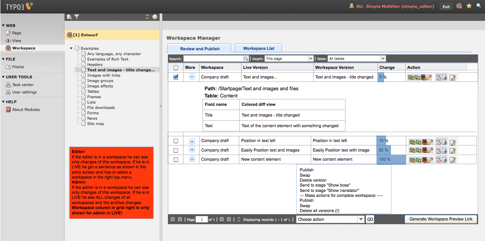
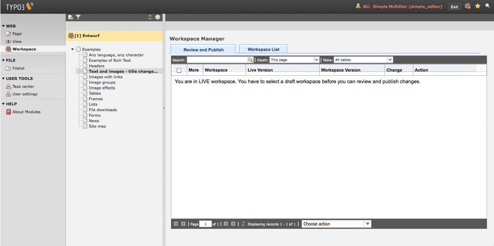
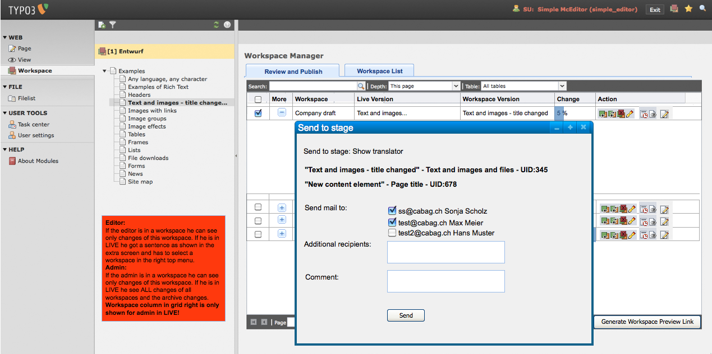
#3 Updated by Jens Hoffmann almost 5 years ago
The Images are PNG's as filetype.
I will re-upload them again.
#4 Updated by Oliver Hader almost 5 years ago
- File 20100907_workspace_editor.png added
- File 20100907_workspace_editorInLive.png added
- File 20100907_workspace_stagebox.png added
#5 Updated by Oliver Hader almost 5 years ago
- File deleted (
20100907_workspace_editor)
#6 Updated by Oliver Hader almost 5 years ago
- File deleted (
20100907_workspace_editorInLive)
#7 Updated by Oliver Hader almost 5 years ago
- File deleted (
20100907_workspace_stagebox)
#8 Updated by Oliver Hader almost 5 years ago
- column for current stage
- how to visualize to users which workspace is currently activated
#9 Updated by Lars Zimmermann almost 5 years ago
- File entwurf_workspaces.png added
Hi everyone,
I designed a proposal for the workspace module, based on mostly existing elements from the 4.4 backend. The icons are not final at all. Tomorrow in Wiesbaden I will take care of this...
A version with a unfolded element I will also add tomorrow, as well as the other missing elements. I just wanted to show a direction in which the workspace module could develope visually...
cheers
lars
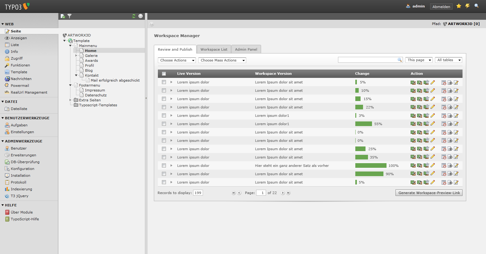
#10 Updated by Tolleiv Nietsch almost 5 years ago
- File entwurf_4.5_workspaces-03.png added
The second suggestion from Lars:
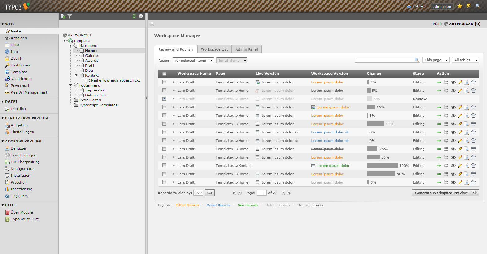
#11 Updated by Lars Zimmermann almost 5 years ago
- File entwurf_4.5-workspaces-detail.png added
- File entwurf_4.5-workspaces-detail-hover.png added
- File entwurf_4.5-workspaces.png added
Hi,
I've created a suggestion for the detail view with an optional hover state for the workspace-version content-item (does this makes sense there?).
I've also added to the original screen a sorting arrow for the columns as well as the properties dropdown-arrow.
After sleeping one night, I have to admit I don't like the changed header for the workspace version. I have to rethink this again...
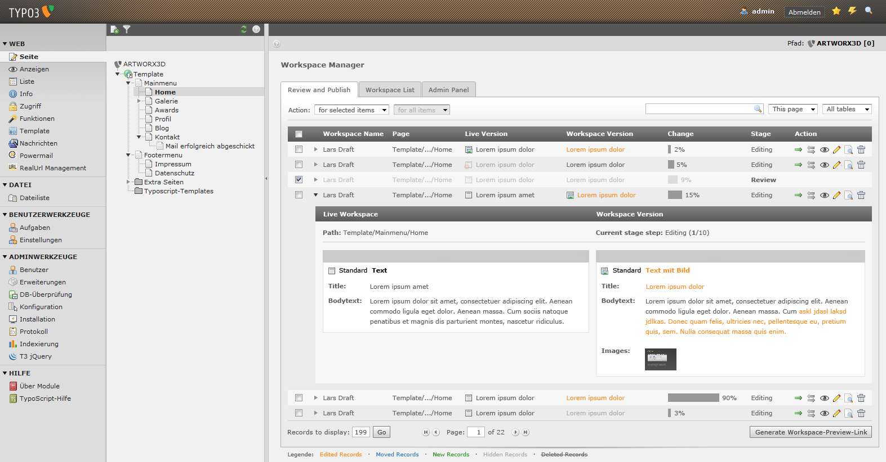
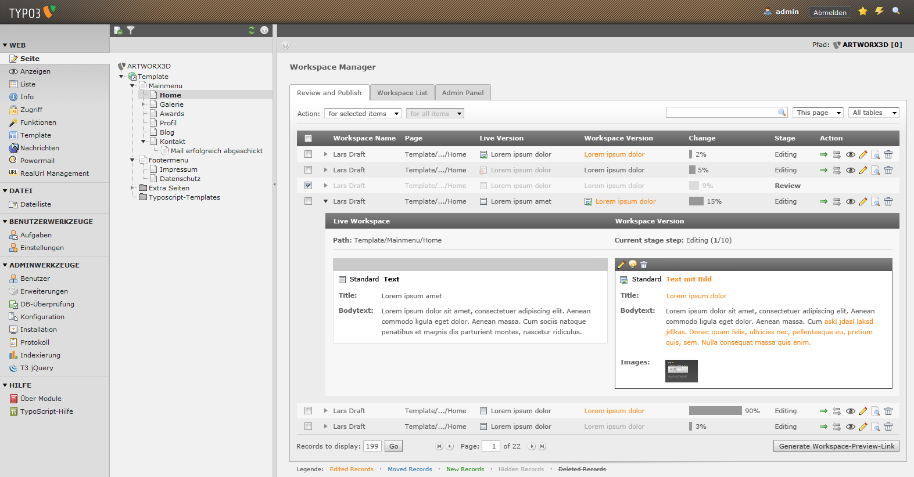
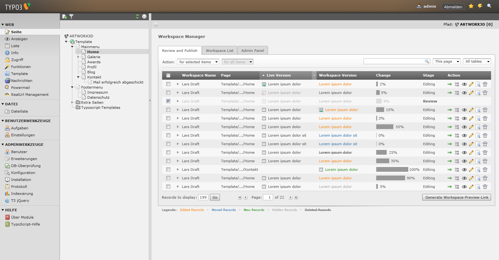
#12 Updated by Sonja Schubert almost 5 years ago
- File 20101016_skribble_jens_modul.jpg added
updated suggestion for new workspace module by HCI team (jens and lars). created at core sprint meeting in Stuttgart
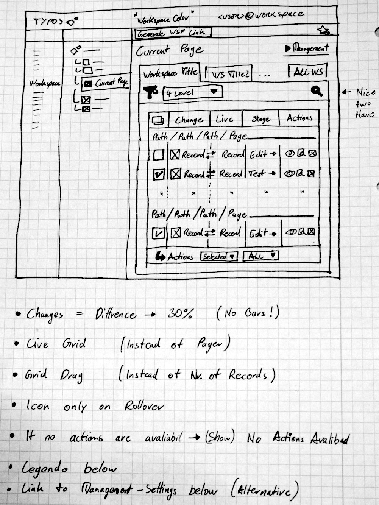
#13 Updated by Jens Hoffmann almost 5 years ago
- File IMG_4611-2.jpg added
- Category set to Design
- Status changed from New to Accepted
- Assigned To set to Lars Zimmermann
Preview Screen Concept:
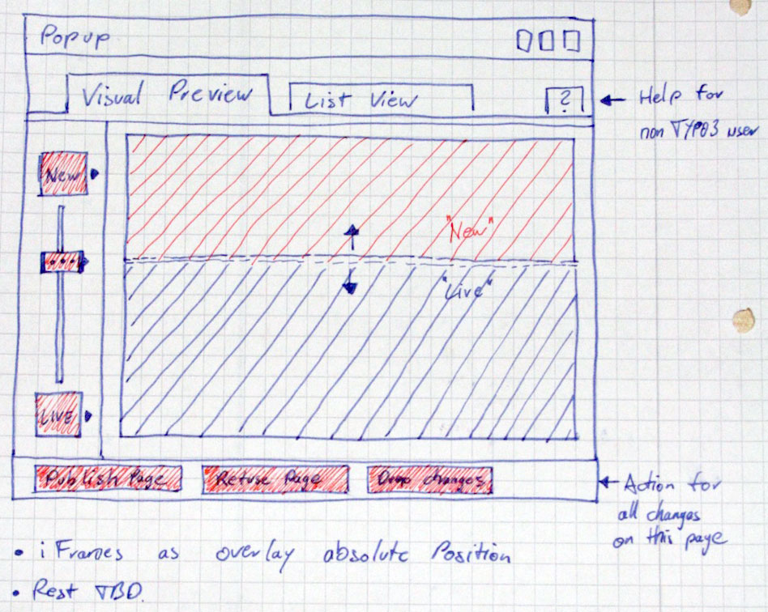
#14 Updated by Lars Zimmermann almost 5 years ago
Hey guys,
I will create screens from the wireframes Jens provided. I hope I'll be able to create them within the next days.
cheers
lars
#15 Updated by Sonja Schubert almost 5 years ago
Hi Lars,
Thank you for the information. We also still need updated screens for the detail view of a row and for the TYPO3 head, as we discussed in Stuttgart. It would be nice if you could create them too.
Thank you for your help and greets
Sonja
#16 Updated by Tolleiv Nietsch almost 5 years ago
- File manual.doc added
The messages which are sent in case the stage is changed should also be part of the foldout. The attachment shows how this was done in the old module.
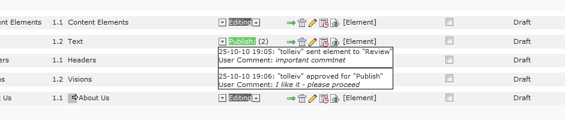
#17 Updated by Tolleiv Nietsch almost 5 years ago
- File messages.png added
argh - manual.doc was not the right file ... see messages.png
#18 Updated by Jens Hoffmann almost 5 years ago
Open questions:
"Generate WSP Link" position, style and behavior need to be specified.
#19 Updated by Lars Zimmermann over 4 years ago
- File entwurf_4.5-workspaces-3.png added
- File entwurf_4.5-workspaces-3-detail.png added
- File entwurf_4.5-workspaces-3-vergleichsseite1.png added
- File entwurf_4.5-workspaces-3-vergleichsseite2.png added
Finally I've created severals screens for the workspace team that I've already discussed with Jens via Skype.
I hope you'll like them...
In the preview screens the slider should maybe change the opacity between the live and the workspace page as an overlay (that's just a new idea to approach to see the difference - this still needs to be discussed)
The rest should be pretty straight forward and hopefully self-explanatory... =)
The icons in the workspaces list view should be really only be revealed on mouse-over. For the swap and "send-to-next-stage"-icons we should create dedicated columns that aren't sortable or movable within the ExtJS Grid.
cheers
lars
PS. Thank you Jens for your effort, time and valued input!
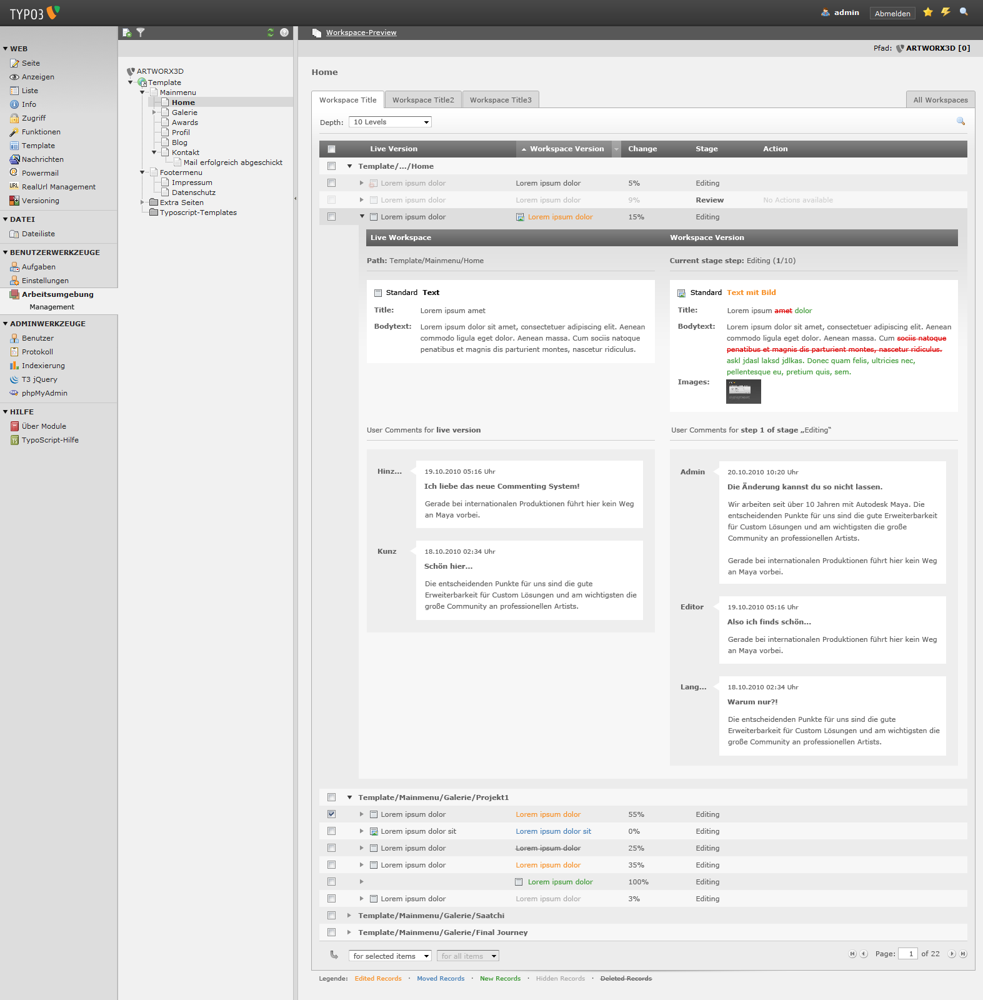
The workspaces view with a detailed content view including new user comments
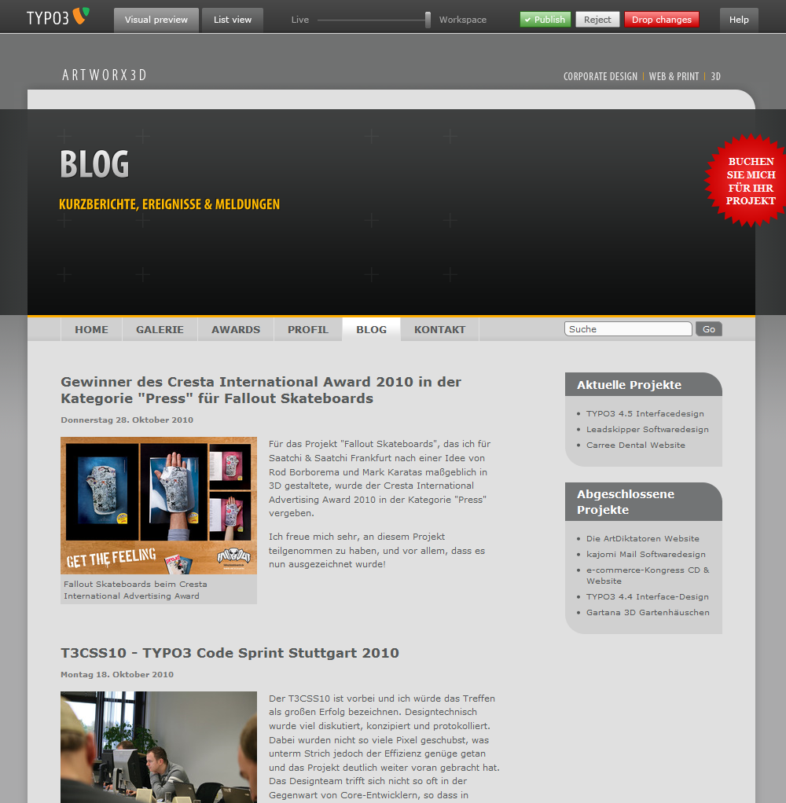
The new approach for the preview-comparison-screen: It's just a small header on top - very compact GUI
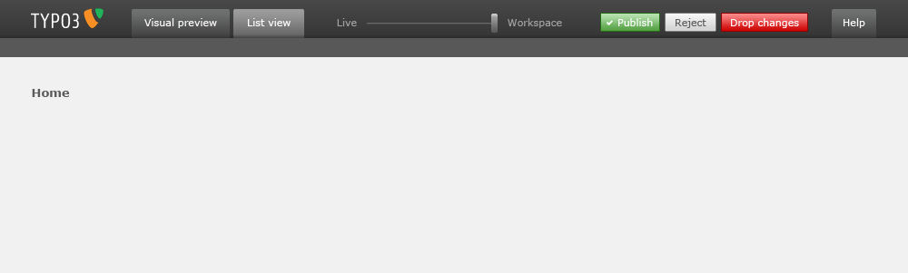
The new approach for the preview-list-screen: This should be straight forward from the rest of the backend - so I didn't create a special screen
#20 Updated by Lars Zimmermann over 4 years ago
- Status changed from Accepted to Needs Feedback
#21 Updated by Lars Zimmermann over 4 years ago
- File deleted (
entwurf_4.5-workspaces-3.png)
#22 Updated by Lars Zimmermann over 4 years ago
- File entwurf_4.5-workspaces-3.png added
ups, jens told me, I had a nano-error in the original screen. the hover was in the wrong line. now it's right...
#23 Updated by Lars Zimmermann over 4 years ago
- File deleted (
entwurf_4.5-workspaces-3.png)
#24 Updated by Lars Zimmermann over 4 years ago
- File entwurf_4.5-workspaces-3.png added
I mean now it's right
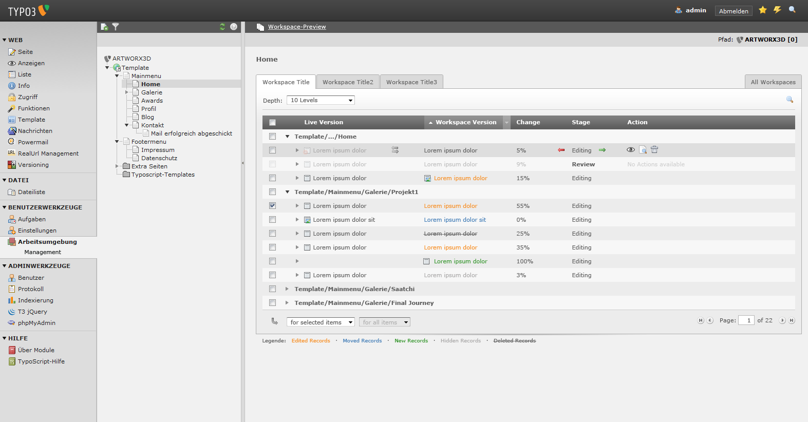
#25 Updated by Tolleiv Nietsch over 4 years ago
Hi - regarding the workspace preview. The "Publish", "Reject" and "Drop changes" buttons are not part of our current concept (because they cause some further technical problems). Besides that I'd like to know what the "Help" tab shows ;)
#26 Updated by Jens Hoffmann over 4 years ago
- Status changed from Needs Feedback to Resolved
We explained/defined that in a Skype meeting.
Could someone add the point from the Skype Meeting here?
@Sonja: Is there a protocol?
BTW: There is a prototype for the Preview window: http://www.steffenkamper.info/last/ws_preview.html
#27 Updated by Sonja Schubert over 4 years ago
Unfortunately there is no protcol from our last skype meeting, where we talked about the current design issues.
But the issues, which are still open, are open in the skin team area.
Yesterday I skyped with Steffen G., so the skin team knows where they can find which things. If there are questions upcoming, the workspace team is available to help, of course.
#28 Updated by Jens Hoffmann over 4 years ago
- Subject changed from Workspace module redesign - some icons and usability check needed to Workspace module redesign